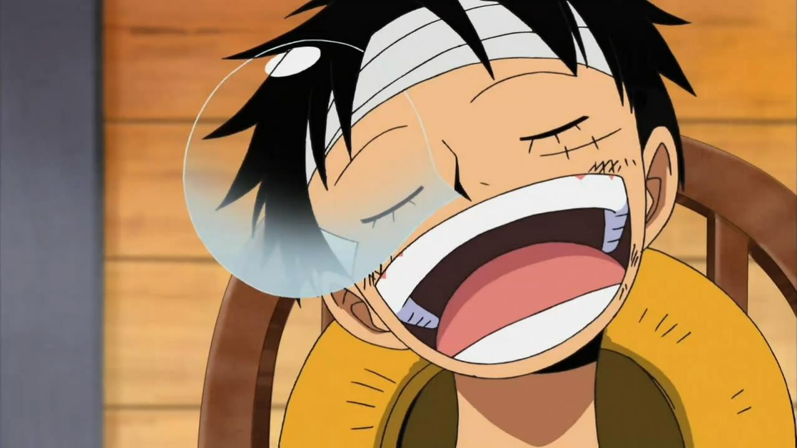

My Hobbies:
- I'm a "repeat offender" when it comes to Hobbies. I love doing so much research into different hobbies that I end up learning so much about it. BUT then i get turned off by the costs.
- Sleeping, or napping in general.

- Playing Video Games. Mostly MMO's and RPG's. 2k, WoW, Magic the Gathering
Arena, and Valorant etc.
- Reading, I like reading fantasy or just fiction novels in general. I also enjoy reading Manga.
- Getting baked and consuming different media to try and get some new ideas or think of new perspectives. Basically just to get new inspiration.
- Watching, Reading, or Researching into Basketball, Football, or Futbol.